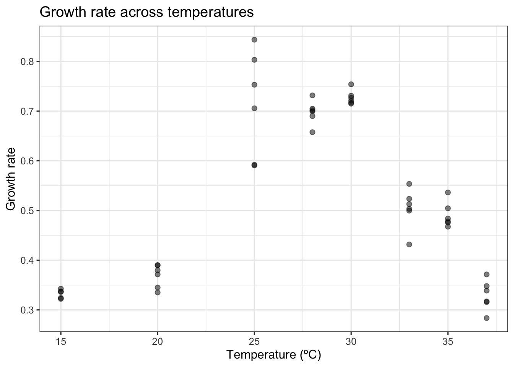
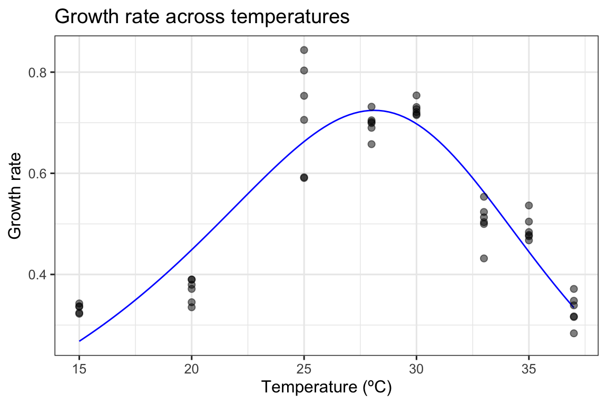
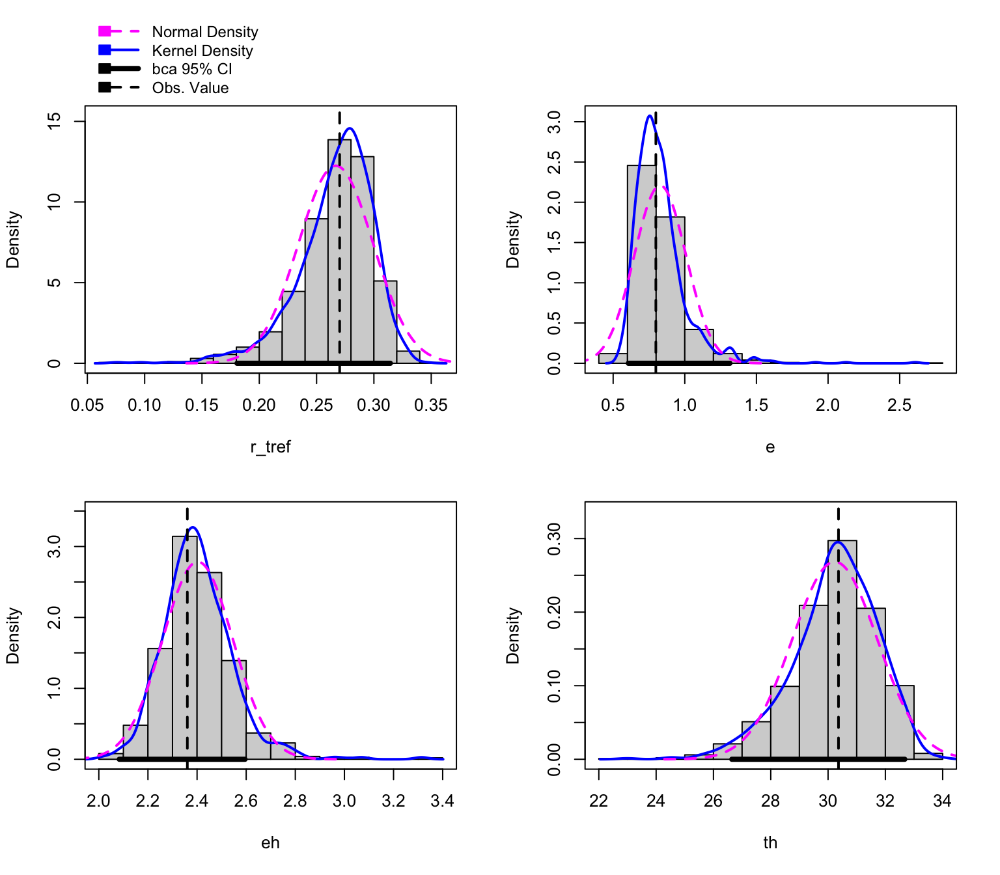
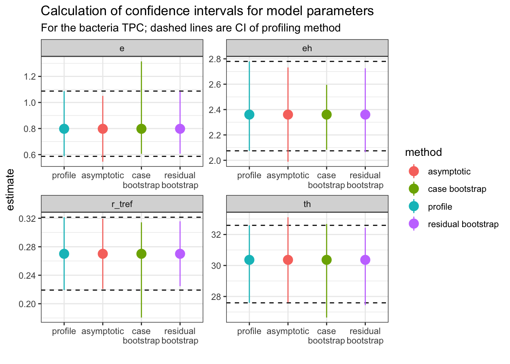

Bootstrap non-linear least squares regression in R with purrr and car
R
nonlinear regression
car
tidyverse
Author
Daniel Padfield
Published
January 21, 2018
This post was updated to reflect the improvement of using car to bootstrap nonlinear regressions.
Introduction
For my first academic publication, a reviewer asked for the \(r^{2}\) values of the thermal performance curves I fitted using non-linear regression. I bowed to the request as is often the case with reviewer comments, but would now resist as the \(r^{2}\) is not necessarily an effective goodness of fit measure for non-linear regression (see this SO answer). It does raise the question of how to determine how well a biologically meaningful model fits the data it is fitted to. I generally just plot every curve to its data, but it tells me nothing of the uncertainty around the curve.
Step forward the bootstrap! (Non-parametric) bootstrapping is a robust way of computing parameter and model prediction confidence intervals. Bootstrapping involves simulating “new” datasets produced from either the original data (case resampling) or from the original model (residual resampling).
The same model is then fitted separately on each individual bootstrapped dataset. Doing this over and over allows us to visualise uncertainty of predictions and produce confidence intervals of estimated parameters. When previously implementing this, I used methods similar to previous blog posts by Andrew MacDonald and Hadley Wickham, as well as a broom vignette.
However, I have since applied a more efficient method using the package car, which contains the function Boot() that provides a wrapper for the widely used function boot::boot() that is tailored to bootstrapping regression models.
Case resampling: Resampling the original data with replacement
Bootstrapping using case resampling involves simulating “new” datasets produced from the existing data by sampling with replacement.
Case resampling: When it works
We will demonstrate an example of when this case resampling approach works using data from a recent paper by Padfield et al. (2020), that measures the thermal performance of the bacteria, Pseudomonas fluorescens, in the presence and absence of its phage, \(\phi 2\). In this study, each single growth rate estimate is a technical replicate. As such, all the data points within each phage treatment can be used to estimate the same curve. The data is in the R package rTPC and we can visualise one of the curves using ggplot2.
# load packageslibrary(boot)library(car)library(rTPC) #remotes::install_github('padpadpadpad/rTPC')library(nls.multstart)library(broom)library(tidyverse)library(patchwork)library(minpack.lm)# load in datadata("bacteria_tpc")# keep just a single curved <-filter(bacteria_tpc, phage =='nophage')# show the dataggplot(d, aes(temp, rate)) +geom_point(size =2, alpha =0.5) +theme_bw(base_size =12) +labs(x ='Temperature (ºC)',y ='Growth rate',title ='Growth rate across temperatures')

As in the study, we can fit the Sharpe-Schoolfield model to the data. I take advantage of the packages nls.mulstart and rTPC to do this.
# fit Sharpe-Schoolfield modeld_fit <-nest(d, data =c(temp, rate)) %>%mutate(sharpeschoolhigh =map(data, ~nls_multstart(rate~sharpeschoolhigh_1981(temp = temp, r_tref,e,eh,th, tref =15),data = .x,iter =c(3,3,3,3),start_lower =get_start_vals(.x$temp, .x$rate, model_name ='sharpeschoolhigh_1981') -10,start_upper =get_start_vals(.x$temp, .x$rate, model_name ='sharpeschoolhigh_1981') +10,lower =get_lower_lims(.x$temp, .x$rate, model_name ='sharpeschoolhigh_1981'),upper =get_upper_lims(.x$temp, .x$rate, model_name ='sharpeschoolhigh_1981'),supp_errors ='Y',convergence_count =FALSE)),# create new temperature datanew_data =map(data, ~tibble(temp =seq(min(.x$temp), max(.x$temp), length.out =100))),# predict over that data,preds =map2(sharpeschoolhigh, new_data, ~augment(.x, newdata = .y)))# unnest predictionsd_preds <-select(d_fit, preds) %>%unnest(preds)# plot data and predictionsggplot() +geom_line(aes(temp, .fitted), d_preds, col ='blue') +geom_point(aes(temp, rate), d, size =2, alpha =0.5) +theme_bw(base_size =12) +labs(x ='Temperature (ºC)',y ='Growth rate',title ='Growth rate across temperatures')

nls_multstart() is designed to fit models across a wide possible parameter space, but as it samples multiple start parameters for each model, using it with bootstrapping becomes computationally expensive. Instead, we refit the model using minpack.lm::nlsLM(), using the coefficients of nls_multstart() as the start values. The Boot() function then refits the model 999 times and stores the model coefficients.
# refit model using nlsLMfit_nlsLM <- minpack.lm::nlsLM(rate~sharpeschoolhigh_1981(temp = temp, r_tref,e,eh,th, tref =15),data = d,start =coef(d_fit$sharpeschoolhigh[[1]]),lower =get_lower_lims(d$temp, d$rate, model_name ='sharpeschoolhigh_1981'),upper =get_upper_lims(d$temp, d$rate, model_name ='sharpeschoolhigh_1981'),weights =rep(1, times =nrow(d)))# bootstrap using case resamplingboot1 <-Boot(fit_nlsLM, method ='case')# look at the datahead(boot1$t)
The parameters of each bootstrapped refit are returned. All methods that are available for boot() and Boot() are supported for these objects. This includes the hist.boot() function which looks at the distribution of each parameter.
hist(boot1, layout =c(2,2))

We can easily create predictions for each of these models and through this confidence intervals around the original fitted predictions. We can then plot (1) the bootstrapped fits and (2) the confidence regions around the model predictions.
This method works well here, because there are many points beyond the peak of the curve and multiple independent points at each temperature.
Case resampling: When it struggles
This method becomes more problematic when there is a small sample size and the coverage of temperature values beyond the optimum temperature is small. This means that many of the bootstrapped datasets will not have any points beyond the optimum, which is problematic for mathematical models that expect a unimodal shape. The effect of this can be seen by case resampling a curve from the chlorella_tpc dataset also in rTPC. Here we again fit the model using nls_multstart(), refit the model using nlsLM(), then bootstrap the model using Boot().
# load in chlorella datadata('chlorella_tpc') d2 <-filter(chlorella_tpc, curve_id ==1)# fit Sharpe-Schoolfield model to raw datad_fit <-nest(d2, data =c(temp, rate)) %>%mutate(sharpeschoolhigh =map(data, ~nls_multstart(rate~sharpeschoolhigh_1981(temp = temp, r_tref,e,eh,th, tref =15),data = .x,iter =c(3,3,3,3),start_lower =get_start_vals(.x$temp, .x$rate, model_name ='sharpeschoolhigh_1981') -10,start_upper =get_start_vals(.x$temp, .x$rate, model_name ='sharpeschoolhigh_1981') +10,lower =get_lower_lims(.x$temp, .x$rate, model_name ='sharpeschoolhigh_1981'),upper =get_upper_lims(.x$temp, .x$rate, model_name ='sharpeschoolhigh_1981'),supp_errors ='Y',convergence_count =FALSE)),# create new temperature datanew_data =map(data, ~tibble(temp =seq(min(.x$temp), max(.x$temp), length.out =100))),# predict over that data,preds =map2(sharpeschoolhigh, new_data, ~augment(.x, newdata = .y)))# refit model using nlsLMfit_nlsLM2 <-nlsLM(rate~sharpeschoolhigh_1981(temp = temp, r_tref,e,eh,th, tref =15),data = d2,start =coef(d_fit$sharpeschoolhigh[[1]]),lower =get_lower_lims(d2$temp, d2$rate, model_name ='sharpeschoolhigh_1981'),upper =get_upper_lims(d2$temp, d2$rate, model_name ='sharpeschoolhigh_1981'),control =nls.lm.control(maxiter=500),weights =rep(1, times =nrow(d2)))# bootstrap using case resamplingboot2 <-Boot(fit_nlsLM2, method ='case')
Number of bootstraps was 995 out of 999 attempted
We can then create predictions for each bootstrapped model and calculate 95% confidence intervals around the predictions. Models that don’t fit and return NA for the parameter estimates are dropped.
# unnest predictions of original model fitd_preds <-select(d_fit, preds) %>%unnest(preds)# predict over new databoot2_preds <- boot2$t %>%as.data.frame() %>%drop_na() %>%mutate(iter =1:n()) %>%group_by_all() %>%do(data.frame(temp =seq(min(d2$temp), max(d2$temp), length.out =100))) %>%ungroup() %>%mutate(pred =sharpeschoolhigh_1981(temp, r_tref, e, eh, th, tref =15))# calculate bootstrapped confidence intervalsboot2_conf_preds <-group_by(boot2_preds, temp) %>%summarise(conf_lower =quantile(pred, 0.025),conf_upper =quantile(pred, 0.975),.groups ='drop')# plot bootstrapped CIsp1 <-ggplot() +geom_line(aes(temp, .fitted), d_preds, col ='blue') +geom_ribbon(aes(temp, ymin = conf_lower, ymax = conf_upper), boot2_conf_preds, fill ='blue', alpha =0.3) +geom_point(aes(temp, rate), d2, size =2) +theme_bw(base_size =12) +labs(x ='Temperature (ºC)',y ='Growth rate',title ='Growth rate across temperatures')# plot bootstrapped predictionsp2 <-ggplot() +geom_line(aes(temp, .fitted), d_preds, col ='blue') +geom_line(aes(temp, pred, group = iter), boot2_preds, col ='blue', alpha =0.007) +geom_point(aes(temp, rate), d2, size =2) +theme_bw(base_size =12) +labs(x ='Temperature (ºC)',y ='Growth rate',title ='Growth rate across temperatures')p1 + p2
As can be seen, bootstrapping-with-replacement with only a single point at each temperature can lead to a large variety of fits. In the second panel, we can see the variation of the curve fits, clustering around 4 possible paths for the decrease in rate beyond the optimum temperature. This occurs because in many instances there are no points sampled at the very high temperatures, leading to this clustering in curve fits.
Residual resampling
Case resampling is the most common way of thinking about bootstrapping. However, bootstrapping ordinary least squares regression models is often done using bootstrapping residuals. This method - where the values of the predictors in a study remain fixed during resampling - is especially useful in a designed experiment where the values of the predictors are set by the experimenter.
Re-sampling residuals, at its heart, follows a simple set of steps:
Fit the model and for each data point, \(i\), retain the fitted values \(\hat{y_{i}}\) and the residuals, \(\hat{e_{i}} = y_{i} - \hat{y_{i}}\)
For each data pair, (\(x_i\), \(y_i\)), where \(x_i\) is the measured temperature value, we add a randomly re-sampled residual, \(\hat{e}\) to the fitted value \(\hat{y_i}\). This becomes the new \(y_i\) value, such that \(y_i = \hat{y_i} + \hat{e}\). The new response variable is created based on the random re-allocation of the variation around the original model fit
The model is refit using the newly created \(y_i\) response variable
Repeat steps 2 and 3 a number of times
This method makes the assumption that the original model fit is a good representation of the data, and that the error terms in the model are normally distributed and independent. If the model is incorrectly specified – for example, if there is unmodelled non-linearity, non-constant error variance, or outliers – these characteristics will not carry over into the re-sampled data sets.
car::Boot() has an argument that allows us to easily implement residual resampling instead of case resampling, by setting method = 'residual'.
Calculating confidence intervals of estimated parameters
Bootstrapping can be used to estimate confidence intervals of the parameters explicitly modelled in the regression. We can compare these approaches to profiled confidence intervals (using confint-MASS) and asymptotic confidence intervals (using nlstools::confint2()). For the bootstrapped parameter distributions, confint.boot() supports the calculation of BCa, basic, normal, and percentile confidence intervals. We use BCa here, and we will calculate all CIs on the two models done previously in this vignette. First with the bacteria TPC.
# First for the bacteria# get parameters of fitted modelparam_bact <- broom::tidy(fit_nlsLM) %>%select(param = term, estimate)# calculate confidence intervals of modelsci_bact1 <- nlstools::confint2(fit_nlsLM, method ='asymptotic') %>%as.data.frame() %>%rename(conf_lower =1, conf_upper =2) %>%rownames_to_column(., var ='param') %>%mutate(method ='asymptotic')ci_bact2 <-confint(fit_nlsLM) %>%as.data.frame() %>%rename(conf_lower =1, conf_upper =2) %>%rownames_to_column(., var ='param') %>%mutate(method ='profile')# CIs from case resamplingci_bact3 <-confint(boot1, method ='bca') %>%as.data.frame() %>%rename(conf_lower =1, conf_upper =2) %>%rownames_to_column(., var ='param') %>%mutate(method ='case bootstrap')# CIs from residual resamplingci_bact4 <-Boot(fit_nlsLM, method ='residual') %>%confint(., method ='bca') %>%as.data.frame() %>%rename(conf_lower =1, conf_upper =2) %>%rownames_to_column(., var ='param') %>%mutate(method ='residual bootstrap')ci_bact <-bind_rows(ci_bact1, ci_bact2, ci_bact3, ci_bact4) %>%left_join(., param_bact)# plotggplot(ci_bact, aes(forcats::fct_relevel(method, c('profile', 'asymptotic')), estimate, col = method)) +geom_hline(aes(yintercept = conf_lower), linetype =2, filter(ci_bact, method =='profile')) +geom_hline(aes(yintercept = conf_upper), linetype =2, filter(ci_bact, method =='profile')) +geom_point(size =4) +geom_linerange(aes(ymin = conf_lower, ymax = conf_upper)) +theme_bw() +facet_wrap(~param, scales ='free') +scale_x_discrete('', labels =function(x) stringr::str_wrap(x, width =10)) +labs(title ='Calculation of confidence intervals for model parameters',subtitle ='For the bacteria TPC; dashed lines are CI of profiling method')

Each panel is a different explicitly modelled parameter. The dashed lines represent the 95% intervals for the profiling method. In general, the different bootstrap methods are similar to the profiled intervals, but not all parameters are the same. For example, r_tref and e give wider (and asymmetric) confidence intervals using the case resampling method. The residual method gives estimates that are more similar to those calculated from profiling.
Calculate confidence intervals of generated parameters
Crucially, bootstrapping allows the calculation of confidence intervals for parameters derived from the model that were not present in the initial fitting process. For example, the optimum temperature of a thermal performance curve, \(T_{opt}\) is calculated as:
\[T_{opt} = \frac{E_{h}T_{h}}{E_{h} + k T_{h} ln(\frac{E_{h}}{E} - 1)}\] We can calculate \(T_{opt}\) by writing a custom function that we feed into Boot(). We will do this using the case resampling approach for the first curve in this blog post.
This approach of using purrr, nls.multstart, and car can easily be scaled up to multiple curves.
References
Padfield, D., Castledine, M., & Buckling, A. (2020). Temperature-dependent changes to host–parasite interactions alter the thermal performance of a bacterial host. The ISME Journal, 14(2), 389-398.